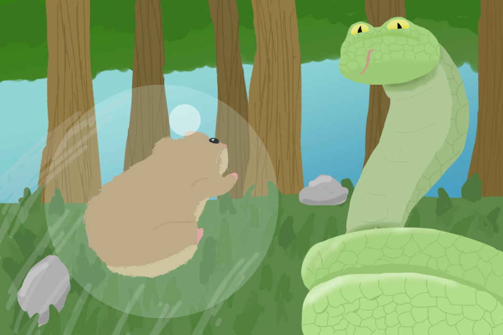

Welcome
Inspired by the likes of Ori and the Blind Forest, Gravity Rush, Pinball, and the Attack on Titan fan game by Fenglee comes this new experience. A game that attaches and conjoins its combat system to its movement. A game about a nomadic tribe of hamsters trying to survive in a harsh environment filled with predators. Become the Bouncer hero named Rico Chet and bring down enemies ten times your size. Rack up immense combos bouncing against walls to land devastating hits on your enemies with your hamster ball.
